8.3 Variationen: Mehrband-Maschinen, nichtdeterministische Maschinen./course1/wly/08/03-Turing-machine-variants.wly:3:11
Turingmaschinen mit mehreren Bändern./course1/wly/08/03-Turing-machine-variants.wly:6:9
Im letzten Teilkapitel ist Ihnen bestimmt aufgefallen,./course1/wly/08/03-Turing-machine-variants.wly:8:5 dass es auffallend lästig ist, selbst für einfache Sprachen./course1/wly/08/03-Turing-machine-variants.wly:9:5 wie./course1/wly/08/03-Turing-machine-variants.wly:10:5
$$
\begin{align*}
\{a^n b^n c^n \ | \ n \geq 0 \}
\end{align*}
$$./course1/wly/08/03-Turing-machine-variants.wly:12:5
oder./course1/wly/08/03-Turing-machine-variants.wly:16:5
$$
\begin{align*}
\{wcw
| \ w \in \{a,b\}^*\}
\end{align*}
$$./course1/wly/08/03-Turing-machine-variants.wly:18:5
Turingmaschinen zu programmieren. Ein Grund dafür ist,./course1/wly/08/03-Turing-machine-variants.wly:23:5 dass die Maschine nur an einer Position des Bandes lesen./course1/wly/08/03-Turing-machine-variants.wly:24:5 und schreiben kann und man deswegen ständig zwischen./course1/wly/08/03-Turing-machine-variants.wly:25:5 verschiedenen Stellen hin- und herfahren muss. Es bietet./course1/wly/08/03-Turing-machine-variants.wly:26:5 sich daher an, an etwas allgemeineres Modell einer./course1/wly/08/03-Turing-machine-variants.wly:27:5 Rechenmaschine zu definieren, das dann auch leichter zu./course1/wly/08/03-Turing-machine-variants.wly:28:5 programmieren ist. Dies ist die ./course1/wly/08/03-Turing-machine-variants.wly:29:5Mehrband-Turingmaschine./course1/wly/08/03-Turing-machine-variants.wly:29:38../course1/wly/08/03-Turing-machine-variants.wly:29:62 ./course1/wly/08/03-Turing-machine-variants.wly:29:62 Eine Mehrband-Turingmaschine ist wie eine Turingmaschine,./course1/wly/08/03-Turing-machine-variants.wly:30:5 nur dass sie statt einem ./course1/wly/08/03-Turing-machine-variants.wly:31:5$k$./course1/wly/08/03-Turing-machine-variants.wly:31:30 viele Bänder und somit auch./course1/wly/08/03-Turing-machine-variants.wly:31:33 ./course1/wly/08/03-Turing-machine-variants.wly:32:5$k$./course1/wly/08/03-Turing-machine-variants.wly:32:5 viele Schreib-Lese-Köpfe hat. Die./course1/wly/08/03-Turing-machine-variants.wly:32:8 Zustandsübergangsfunktion ./course1/wly/08/03-Turing-machine-variants.wly:33:5$\delta$./course1/wly/08/03-Turing-machine-variants.wly:33:31 hat somit auch die./course1/wly/08/03-Turing-machine-variants.wly:33:39 Signatur./course1/wly/08/03-Turing-machine-variants.wly:34:5
$$
\begin{align*}
\delta : Q \times \Gamma^k
\rightarrow Q \times \Gamma^k \times \lsr^k
\end{align*}
$$./course1/wly/08/03-Turing-machine-variants.wly:36:5
 course1/public/img/turing-machines/example-3-multitape/01.svg
course1/public/img/turing-machines/example-3-multitape/01.svg
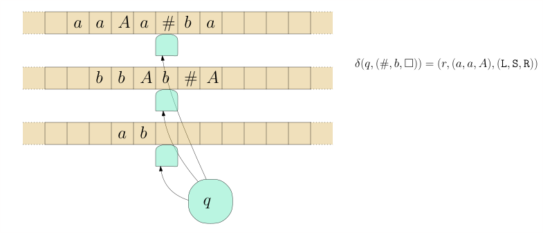
course1/public/img/turing-machines/example-3-multitape/02.svg course1/public/img/turing-machines/example-3-multitape/03.svg
course1/public/img/turing-machines/example-3-multitape/03.svg
 course1/public/img/turing-machines/example-3-multitape/04.svg
course1/public/img/turing-machines/example-3-multitape/04.svg
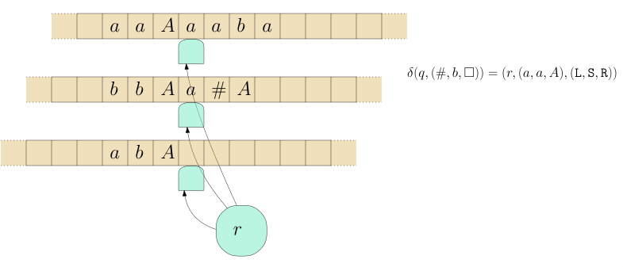
course1/public/img/turing-machines/example-3-multitape/05.svgBeispiel 8.3.1./course1/wly/08/03-Turing-machine-variants.wly:49:5 ./course1/wly/08/03-Turing-machine-variants.wly:49:5 Entwerfen wir nun eine Turingmaschine für die./course1/wly/08/03-Turing-machine-variants.wly:50:9 Palindromsprache./course1/wly/08/03-Turing-machine-variants.wly:51:9
$$
\begin{align*}
L := \{ w \in \{a,b\}^* \ | \ w = w^R \} \ ,
\end{align*}
$$./course1/wly/08/03-Turing-machine-variants.wly:53:9
In ./course1/wly/08/03-Turing-machine-variants.wly:57:9Beispiel 8.2.2 haben wir dafür eine./course1/wly/08/03-Turing-machine-variants.wly:57:9 Einband-Turingmaschine geschrieben. Deren Nachteil war,./course1/wly/08/03-Turing-machine-variants.wly:58:9 dass sie ständig zwischen dem linken und rechten Rand./course1/wly/08/03-Turing-machine-variants.wly:59:9 hin-und-herlaufen musste. Bauen wir nun eine./course1/wly/08/03-Turing-machine-variants.wly:60:9 Mehrband-Turingmaschine. Diese arbeitet in drei einfachen./course1/wly/08/03-Turing-machine-variants.wly:61:9 und kurzen Phasen:./course1/wly/08/03-Turing-machine-variants.wly:62:9
-
copy./course1/wly/08/03-Turing-machine-variants.wly:66:18:./course1/wly/08/03-Turing-machine-variants.wly:66:23 kopiert das ./course1/wly/08/03-Turing-machine-variants.wly:66:23$w$./course1/wly/08/03-Turing-machine-variants.wly:66:37 auf das zweite Band./course1/wly/08/03-Turing-machine-variants.wly:66:40 -
rewind./course1/wly/08/03-Turing-machine-variants.wly:69:18:./course1/wly/08/03-Turing-machine-variants.wly:69:25 bewegt den Kopf des ersten Bandes zurück zum./course1/wly/08/03-Turing-machine-variants.wly:69:25 Anfang./course1/wly/08/03-Turing-machine-variants.wly:70:17 -
compare./course1/wly/08/03-Turing-machine-variants.wly:73:18:./course1/wly/08/03-Turing-machine-variants.wly:73:26 schaut, ob erstes und zweites Band den gleichen./course1/wly/08/03-Turing-machine-variants.wly:73:26 Inhalt haben../course1/wly/08/03-Turing-machine-variants.wly:74:17
Den "Quelltext" für./course1/wly/08/03-Turing-machine-variants.wly:76:9 ./course1/wly/08/03-Turing-machine-variants.wly:77:9turingmachinesimulator.com./course1/wly/08/03-Turing-machine-variants.wly:77:10 ./course1/wly/08/03-Turing-machine-variants.wly:77:73 finden Sie in./course1/wly/08/03-Turing-machine-variants.wly:78:9 ./course1/wly/08/03-Turing-machine-variants.wly:79:9palindrome-multiple-tapes.txt./course1/wly/08/03-Turing-machine-variants.wly:79:10../course1/wly/08/03-Turing-machine-variants.wly:79:96
Übungsaufgabe 8.3.1./course1/wly/08/03-Turing-machine-variants.wly:81:5
./course1/wly/08/03-Turing-machine-variants.wly:81:5
Schreiben Sie eine Mehrband-Turingmaschine, die./course1/wly/08/03-Turing-machine-variants.wly:82:9
Binärzahlen addiert. Wenn also beispielsweise
./course1/wly/08/03-Turing-machine-variants.wly:83:91010+110./course1/wly/08/03-Turing-machine-variants.wly:83:56
./course1/wly/08/03-Turing-machine-variants.wly:83:65
auf dem ersten Band (Eingabeband) steht, dann soll nach./course1/wly/08/03-Turing-machine-variants.wly:84:9
Abschluss der Berechnung das Ergebnis auf dem Ausgabeband./course1/wly/08/03-Turing-machine-variants.wly:85:9
stehen, also
./course1/wly/08/03-Turing-machine-variants.wly:86:910000./course1/wly/08/03-Turing-machine-variants.wly:86:23../course1/wly/08/03-Turing-machine-variants.wly:86:29
./course1/wly/08/03-Turing-machine-variants.wly:86:29Tip../course1/wly/08/03-Turing-machine-variants.wly:86:32
Verwenden Sie drei Bänder. Sei./course1/wly/08/03-Turing-machine-variants.wly:86:37
der Bandinhalt
./course1/wly/08/03-Turing-machine-variants.wly:87:9$x+y$./course1/wly/08/03-Turing-machine-variants.wly:87:24../course1/wly/08/03-Turing-machine-variants.wly:87:29
In einer ersten Phase kopieren Sie./course1/wly/08/03-Turing-machine-variants.wly:87:29
./course1/wly/08/03-Turing-machine-variants.wly:88:9$x$./course1/wly/08/03-Turing-machine-variants.wly:88:9
auf das zweite Band. In der nächsten Phase gehen Sie./course1/wly/08/03-Turing-machine-variants.wly:88:12
ans Ende von
./course1/wly/08/03-Turing-machine-variants.wly:89:9$y$./course1/wly/08/03-Turing-machine-variants.wly:89:22../course1/wly/08/03-Turing-machine-variants.wly:89:25
Dann addieren Sie nach den Regeln der./course1/wly/08/03-Turing-machine-variants.wly:89:25
Binäraddition. Ob "1 gemerkt" gilt oder nicht, können Sie./course1/wly/08/03-Turing-machine-variants.wly:90:9
in Ihrem internen Zustand speichern. Eine Regel wäre also./course1/wly/08/03-Turing-machine-variants.wly:91:9
zum Beispiel:./course1/wly/08/03-Turing-machine-variants.wly:92:9
carry1, 0, 0, _./course1/wly/08/03-Turing-machine-variants.wly:95:9 carry0, 0, 0, 1,<,<,<./course1/wly/08/03-Turing-machine-variants.wly:96:9 carry1, 0, 1, _./course1/wly/08/03-Turing-machine-variants.wly:97:9 carry1, 0, 1, 0,<,<,<./course1/wly/08/03-Turing-machine-variants.wly:98:9
Ein lästiges Detail ist, dass
./course1/wly/08/03-Turing-machine-variants.wly:101:9$y$./course1/wly/08/03-Turing-machine-variants.wly:101:39
kürzer sein könnte als./course1/wly/08/03-Turing-machine-variants.wly:101:42
./course1/wly/08/03-Turing-machine-variants.wly:102:9$x$./course1/wly/08/03-Turing-machine-variants.wly:102:9
und Sie daher in das
./course1/wly/08/03-Turing-machine-variants.wly:102:12+./course1/wly/08/03-Turing-machine-variants.wly:102:35
reinlaufen könnten; wenn
./course1/wly/08/03-Turing-machine-variants.wly:102:37$x$./course1/wly/08/03-Turing-machine-variants.wly:102:63
./course1/wly/08/03-Turing-machine-variants.wly:102:66
kürzer ist als
./course1/wly/08/03-Turing-machine-variants.wly:103:9$y$./course1/wly/08/03-Turing-machine-variants.wly:103:24,./course1/wly/08/03-Turing-machine-variants.wly:103:27
dann könnten Sie auf dem zweiten Band./course1/wly/08/03-Turing-machine-variants.wly:103:27
in ein
./course1/wly/08/03-Turing-machine-variants.wly:104:9$\square$./course1/wly/08/03-Turing-machine-variants.wly:104:16
reinlaufen. Wie ist dieser Fall zu./course1/wly/08/03-Turing-machine-variants.wly:104:25
behandeln?./course1/wly/08/03-Turing-machine-variants.wly:105:9
Berechnete Sprache, berechnete Funktion../course1/wly/08/03-Turing-machine-variants.wly:107:6 Die Begriffe./course1/wly/08/03-Turing-machine-variants.wly:107:47 des Akzpetierens und Ablehnens definieren wir genau wie für./course1/wly/08/03-Turing-machine-variants.wly:108:5 die Einband-Turingmaschinen. Eine formale Definition der./course1/wly/08/03-Turing-machine-variants.wly:109:5 Konfiguration ersparen wir uns jedoch. Wenn unsere./course1/wly/08/03-Turing-machine-variants.wly:110:5 Mehrband-Turingmaschine nicht nur akzeptieren / ablehnen,./course1/wly/08/03-Turing-machine-variants.wly:111:5 sondern etwas ./course1/wly/08/03-Turing-machine-variants.wly:112:5berechnen./course1/wly/08/03-Turing-machine-variants.wly:112:20 soll, also eine Funktion./course1/wly/08/03-Turing-machine-variants.wly:112:30
$$
\begin{align*}
f :
\Sigma_1 \rightarrow \Sigma_2 \ ,
\end{align*}
$$./course1/wly/08/03-Turing-machine-variants.wly:114:5
dann bauen wir sie per Konvention so, dass sie ein./course1/wly/08/03-Turing-machine-variants.wly:119:5 designiertes Ausgabeband hat, auf dem nach Abschluss der./course1/wly/08/03-Turing-machine-variants.wly:120:5 Berechnung das Ausgabewort ./course1/wly/08/03-Turing-machine-variants.wly:121:5$f(x)$./course1/wly/08/03-Turing-machine-variants.wly:121:32 steht../course1/wly/08/03-Turing-machine-variants.wly:121:38
Einband-Maschinen können Mehrband-Maschinen simulieren./course1/wly/08/03-Turing-machine-variants.wly:124:9
Es stellt sich heraus, dass mehrere Bänder zwar ein./course1/wly/08/03-Turing-machine-variants.wly:126:5 praktisches Feature sind, aber nicht wirklich mehr./course1/wly/08/03-Turing-machine-variants.wly:127:5 Ausdruckskraft verlangen; was eine Mehrband-Turingmaschine./course1/wly/08/03-Turing-machine-variants.wly:128:5 schafft, schafft eine Einband-Turingmaschine auch../course1/wly/08/03-Turing-machine-variants.wly:129:5
Theorem 8.3.2 (Einband-Turingmaschine simuliert./course1/wly/08/03-Turing-machine-variants.wly:131:5 Mehrband-Turingmaschine)./course1/wly/08/03-Turing-machine-variants.wly:133:9../course1/wly/08/03-Turing-machine-variants.wly:133:34 Sei ./course1/wly/08/03-Turing-machine-variants.wly:133:34$M$./course1/wly/08/03-Turing-machine-variants.wly:133:40 eine Turingmaschine mit./course1/wly/08/03-Turing-machine-variants.wly:133:43 ./course1/wly/08/03-Turing-machine-variants.wly:134:9$k$./course1/wly/08/03-Turing-machine-variants.wly:134:9 Bändern, wovon eines ein designiertes Ausgabeband ist../course1/wly/08/03-Turing-machine-variants.wly:134:12 Dann gibt es eine Einband-Turingmaschine ./course1/wly/08/03-Turing-machine-variants.wly:135:9$M'$./course1/wly/08/03-Turing-machine-variants.wly:135:50 mit./course1/wly/08/03-Turing-machine-variants.wly:135:54 folgenden Eigenschaften:./course1/wly/08/03-Turing-machine-variants.wly:136:9
-
$M'(x)$./course1/wly/08/03-Turing-machine-variants.wly:140:17 akzeptiert/lehnt ab/terminiert nicht genau dann,./course1/wly/08/03-Turing-machine-variants.wly:140:24 wenn ./course1/wly/08/03-Turing-machine-variants.wly:141:17$M(x)$./course1/wly/08/03-Turing-machine-variants.wly:141:22 akzeptiert/ablehnt/nicht terminiert../course1/wly/08/03-Turing-machine-variants.wly:141:28
-
Wenn ./course1/wly/08/03-Turing-machine-variants.wly:144:17$M(x)$./course1/wly/08/03-Turing-machine-variants.wly:144:22 akzeptiert und ./course1/wly/08/03-Turing-machine-variants.wly:144:28$y$./course1/wly/08/03-Turing-machine-variants.wly:144:44 der Bandinhalt des./course1/wly/08/03-Turing-machine-variants.wly:144:47 Ausgabebandes ist, dann akzeptiert ./course1/wly/08/03-Turing-machine-variants.wly:145:17$M'(x)$./course1/wly/08/03-Turing-machine-variants.wly:145:52 auch, und der./course1/wly/08/03-Turing-machine-variants.wly:145:59 Bandinhalt (des einzigen Bandes, es gibt ja nur eins) ist./course1/wly/08/03-Turing-machine-variants.wly:146:17 ./course1/wly/08/03-Turing-machine-variants.wly:147:17$y$./course1/wly/08/03-Turing-machine-variants.wly:147:17../course1/wly/08/03-Turing-machine-variants.wly:147:20
In anderen Worten: ./course1/wly/08/03-Turing-machine-variants.wly:149:9$M'$./course1/wly/08/03-Turing-machine-variants.wly:149:28 simuliert ./course1/wly/08/03-Turing-machine-variants.wly:149:32$M$./course1/wly/08/03-Turing-machine-variants.wly:149:43../course1/wly/08/03-Turing-machine-variants.wly:149:46
Beweis Der erste Trick ist, dass wir die ./course1/wly/08/03-Turing-machine-variants.wly:152:9$k$./course1/wly/08/03-Turing-machine-variants.wly:152:43 Bänder von ./course1/wly/08/03-Turing-machine-variants.wly:152:46$M$./course1/wly/08/03-Turing-machine-variants.wly:152:58 ./course1/wly/08/03-Turing-machine-variants.wly:152:61 "zusammenkleben" in ein neues Band, in welcher jede Zelle./course1/wly/08/03-Turing-machine-variants.wly:153:9 ./course1/wly/08/03-Turing-machine-variants.wly:154:9$k$./course1/wly/08/03-Turing-machine-variants.wly:154:9 Symbole enthalten kann:./course1/wly/08/03-Turing-machine-variants.wly:154:12
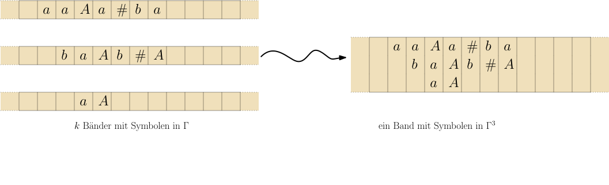
course1/public/img/turing-machines/example-3-multitape/multitape-to-onetape.svgDas Problem sind nun die Köpfe. Wenn wir diese Idee naiv./course1/wly/08/03-Turing-machine-variants.wly:161:9 umsetzen würden, hätte unsere Maschine ./course1/wly/08/03-Turing-machine-variants.wly:162:9$M'$./course1/wly/08/03-Turing-machine-variants.wly:162:48 zwar ein Band,./course1/wly/08/03-Turing-machine-variants.wly:162:52 dafür drei Köpfe auf diesem:./course1/wly/08/03-Turing-machine-variants.wly:163:9
 course1/public/img/turing-machines/example-3-multitape/multitape-to-onetape-three-heads.svg
course1/public/img/turing-machines/example-3-multitape/multitape-to-onetape-three-heads.svg
Wir lösen dies, indem wir die Kopfpositionen in das Band./course1/wly/08/03-Turing-machine-variants.wly:170:9 selbst reinschreiben:./course1/wly/08/03-Turing-machine-variants.wly:171:9
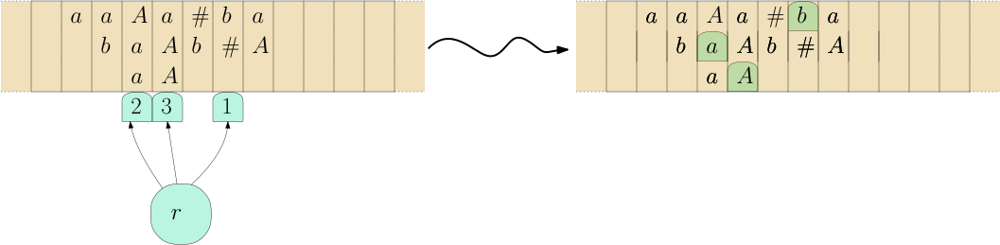
course1/public/img/turing-machines/example-3-multitape/multitape-to-onetape-one-head.svgDas neue Bandalphabet ist also nicht ./course1/wly/08/03-Turing-machine-variants.wly:178:9$\Gamma^k$./course1/wly/08/03-Turing-machine-variants.wly:178:46 sondern./course1/wly/08/03-Turing-machine-variants.wly:178:56 ./course1/wly/08/03-Turing-machine-variants.wly:179:9$(\Gamma \times \{\texttt{head}, \texttt{nohead}\} )^k$./course1/wly/08/03-Turing-machine-variants.wly:179:9../course1/wly/08/03-Turing-machine-variants.wly:179:64 ./course1/wly/08/03-Turing-machine-variants.wly:179:64 Wo steht nun aber denn der Kopf von ./course1/wly/08/03-Turing-machine-variants.wly:180:9$M'$./course1/wly/08/03-Turing-machine-variants.wly:180:45?./course1/wly/08/03-Turing-machine-variants.wly:180:49 Jetzt kommt der./course1/wly/08/03-Turing-machine-variants.wly:180:49 schwierige Teil: um ./course1/wly/08/03-Turing-machine-variants.wly:181:9einen./course1/wly/08/03-Turing-machine-variants.wly:181:30 Schritt von ./course1/wly/08/03-Turing-machine-variants.wly:181:36$M$./course1/wly/08/03-Turing-machine-variants.wly:181:49 zu simulieren,./course1/wly/08/03-Turing-machine-variants.wly:181:52 muss ./course1/wly/08/03-Turing-machine-variants.wly:182:9$M'$./course1/wly/08/03-Turing-machine-variants.wly:182:14 von ganz links nach ganz rechts laufen und alle./course1/wly/08/03-Turing-machine-variants.wly:182:18 Informationen über die ./course1/wly/08/03-Turing-machine-variants.wly:183:9$k$./course1/wly/08/03-Turing-machine-variants.wly:183:32 ./course1/wly/08/03-Turing-machine-variants.wly:183:35$M$./course1/wly/08/03-Turing-machine-variants.wly:183:36-Köpfe./course1/wly/08/03-Turing-machine-variants.wly:183:39 sammeln. Dann von./course1/wly/08/03-Turing-machine-variants.wly:183:39 rechts nach links gehen und die ausführen../course1/wly/08/03-Turing-machine-variants.wly:184:9
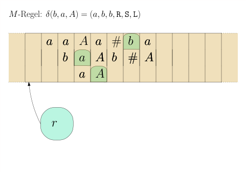
course1/public/img/turing-machines/one-simulates-multi/01-01.svg course1/public/img/turing-machines/one-simulates-multi/02-01.svg
course1/public/img/turing-machines/one-simulates-multi/02-01.svg
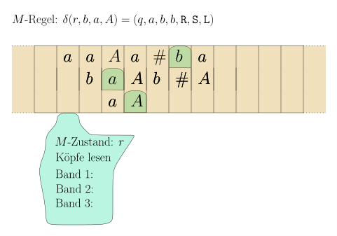
course1/public/img/turing-machines/one-simulates-multi/02-02.svg course1/public/img/turing-machines/one-simulates-multi/02-03.svg
course1/public/img/turing-machines/one-simulates-multi/02-03.svg
 course1/public/img/turing-machines/one-simulates-multi/02-04.svg
course1/public/img/turing-machines/one-simulates-multi/02-04.svg
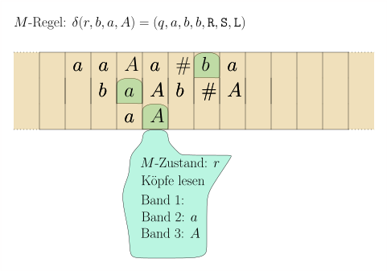
course1/public/img/turing-machines/one-simulates-multi/02-05.svg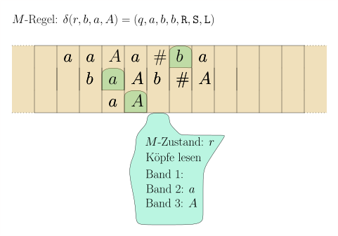
course1/public/img/turing-machines/one-simulates-multi/02-06.svg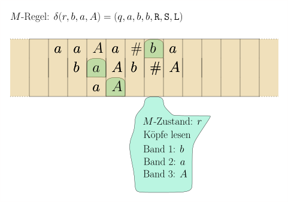
course1/public/img/turing-machines/one-simulates-multi/02-07.svg course1/public/img/turing-machines/one-simulates-multi/02-08.svg
course1/public/img/turing-machines/one-simulates-multi/02-08.svg
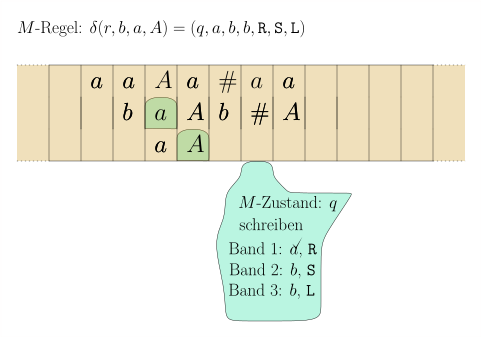
course1/public/img/turing-machines/one-simulates-multi/03-01.svg course1/public/img/turing-machines/one-simulates-multi/03-02.svg
course1/public/img/turing-machines/one-simulates-multi/03-02.svg
 course1/public/img/turing-machines/one-simulates-multi/04-01.svg
course1/public/img/turing-machines/one-simulates-multi/04-01.svg
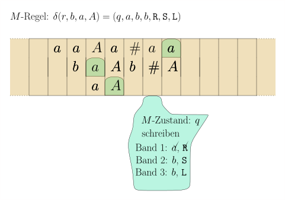
course1/public/img/turing-machines/one-simulates-multi/04-02.svg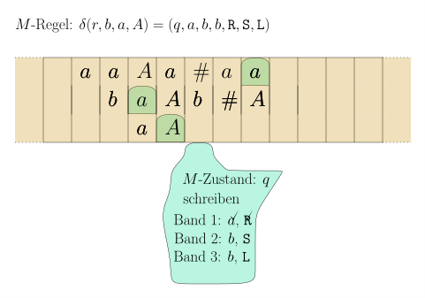
course1/public/img/turing-machines/one-simulates-multi/04-03.svg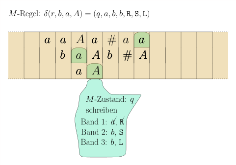
course1/public/img/turing-machines/one-simulates-multi/04-04.svg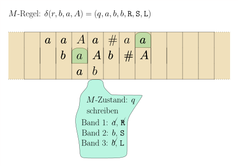
course1/public/img/turing-machines/one-simulates-multi/05-01.svg course1/public/img/turing-machines/one-simulates-multi/05-02.svg
course1/public/img/turing-machines/one-simulates-multi/05-02.svg
 course1/public/img/turing-machines/one-simulates-multi/06-01.svg
course1/public/img/turing-machines/one-simulates-multi/06-01.svg
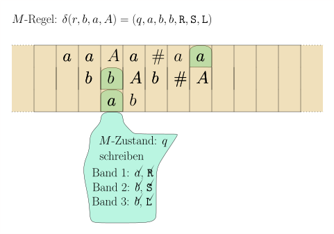
course1/public/img/turing-machines/one-simulates-multi/07-01.svg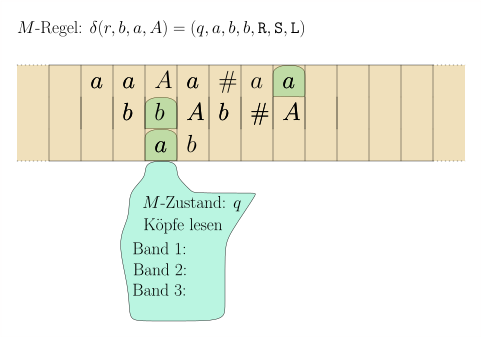
course1/public/img/turing-machines/one-simulates-multi/08-01.svg
Wir müssen also die Zustandsmenge deutlich erweitern; so./course1/wly/08/03-Turing-machine-variants.wly:209:9
muss sie speichern können, ob wir ein Symbol bereits./course1/wly/08/03-Turing-machine-variants.wly:210:9
gelesen haben; ob wir ein Symbol bereits geschrieben haben./course1/wly/08/03-Turing-machine-variants.wly:211:9
und ob wir den Kopf bereits entsprechend verschoben haben../course1/wly/08/03-Turing-machine-variants.wly:212:9
Für eine Rechtsverschiebung müssen wir uns zusätzlich noch./course1/wly/08/03-Turing-machine-variants.wly:213:9
merken, dass wir sie gerade durchführen und für welches./course1/wly/08/03-Turing-machine-variants.wly:214:9
Band. All dies ist viel, aber immer noch endlich. Wir./course1/wly/08/03-Turing-machine-variants.wly:215:9
können alles in einer endlichen Zustandsmenge
./course1/wly/08/03-Turing-machine-variants.wly:216:9$Q'$./course1/wly/08/03-Turing-machine-variants.wly:216:55
./course1/wly/08/03-Turing-machine-variants.wly:216:59
speichern. Wenn der
./course1/wly/08/03-Turing-machine-variants.wly:217:9$M$./course1/wly/08/03-Turing-machine-variants.wly:217:29
-Zustand (der natürlich auch im./course1/wly/08/03-Turing-machine-variants.wly:217:32
./course1/wly/08/03-Turing-machine-variants.wly:218:9$M'$./course1/wly/08/03-Turing-machine-variants.wly:218:9-Zustand./course1/wly/08/03-Turing-machine-variants.wly:218:13
gespeichert
./course1/wly/08/03-Turing-machine-variants.wly:218:13ist),./course1/wly/08/03-Turing-machine-variants.wly:218:13accept./course1/wly/08/03-Turing-machine-variants.wly:218:40erreicht./course1/wly/08/03-Turing-machine-variants.wly:218:47
hat, dann./course1/wly/08/03-Turing-machine-variants.wly:218:47
macht
./course1/wly/08/03-Turing-machine-variants.wly:219:9$M'$./course1/wly/08/03-Turing-machine-variants.wly:219:15
noch eine Aufräumphase, in welcher sie alle./course1/wly/08/03-Turing-machine-variants.wly:219:19
Symbole, die nicht zum Ausgabeband gehören, durch
./course1/wly/08/03-Turing-machine-variants.wly:220:9$\square$./course1/wly/08/03-Turing-machine-variants.wly:220:59
./course1/wly/08/03-Turing-machine-variants.wly:220:68
ersetzt. Dann wechselt sie in ihren eigenen akzeptierenden./course1/wly/08/03-Turing-machine-variants.wly:221:9
Zustand
./course1/wly/08/03-Turing-machine-variants.wly:222:9accept'./course1/wly/08/03-Turing-machine-variants.wly:222:18../course1/wly/08/03-Turing-machine-variants.wly:222:26A\(\square\)
Einfügen versus Überschreiben./course1/wly/08/03-Turing-machine-variants.wly:225:9
Folgende Aufgabe ist auf einer Einband-Turingmaschine sehr./course1/wly/08/03-Turing-machine-variants.wly:227:5 leicht: gegeben ein Eingabewort ./course1/wly/08/03-Turing-machine-variants.wly:228:5$w \in \{a,b\}^*$./course1/wly/08/03-Turing-machine-variants.wly:228:37,./course1/wly/08/03-Turing-machine-variants.wly:228:54 ersetze./course1/wly/08/03-Turing-machine-variants.wly:228:54 jedes ./course1/wly/08/03-Turing-machine-variants.wly:229:5$b$./course1/wly/08/03-Turing-machine-variants.wly:229:11 durch ein ./course1/wly/08/03-Turing-machine-variants.wly:229:14$c$./course1/wly/08/03-Turing-machine-variants.wly:229:25../course1/wly/08/03-Turing-machine-variants.wly:229:28 In der Syntax von./course1/wly/08/03-Turing-machine-variants.wly:229:28 ./course1/wly/08/03-Turing-machine-variants.wly:230:5turingmachinesimulator.com./course1/wly/08/03-Turing-machine-variants.wly:230:6:./course1/wly/08/03-Turing-machine-variants.wly:230:69
name: replace_b_by_c./course1/wly/08/03-Turing-machine-variants.wly:233:5 init: init./course1/wly/08/03-Turing-machine-variants.wly:234:5 accept: accept./course1/wly/08/03-Turing-machine-variants.wly:235:5 init, a./course1/wly/08/03-Turing-machine-variants.wly:236:5 init, a, >./course1/wly/08/03-Turing-machine-variants.wly:237:5 init, b./course1/wly/08/03-Turing-machine-variants.wly:238:5 init, c, >./course1/wly/08/03-Turing-machine-variants.wly:239:5 init, _./course1/wly/08/03-Turing-machine-variants.wly:240:5 accept, _, >./course1/wly/08/03-Turing-machine-variants.wly:241:5
Ungleich schwieriger ist die Aufgabe, jedes ./course1/wly/08/03-Turing-machine-variants.wly:244:5$b$./course1/wly/08/03-Turing-machine-variants.wly:244:49 durch ein./course1/wly/08/03-Turing-machine-variants.wly:244:52 ./course1/wly/08/03-Turing-machine-variants.wly:245:5$bc$./course1/wly/08/03-Turing-machine-variants.wly:245:5 zu ersetzen, weil wir hier etwas ./course1/wly/08/03-Turing-machine-variants.wly:245:9einfügen./course1/wly/08/03-Turing-machine-variants.wly:245:44 wollen../course1/wly/08/03-Turing-machine-variants.wly:245:53 Auf einer Einband-Turingmaschine müssen wir für jedes ./course1/wly/08/03-Turing-machine-variants.wly:246:5$b$./course1/wly/08/03-Turing-machine-variants.wly:246:59 ./course1/wly/08/03-Turing-machine-variants.wly:246:62 alles, was rechts davon kommt, um eine Zelle nach rechts./course1/wly/08/03-Turing-machine-variants.wly:247:5 verschieben. Meinen Quelltext finden sie in./course1/wly/08/03-Turing-machine-variants.wly:248:5 ./course1/wly/08/03-Turing-machine-variants.wly:249:5replace-b-by-bc.txt./course1/wly/08/03-Turing-machine-variants.wly:249:6../course1/wly/08/03-Turing-machine-variants.wly:249:72 Können wir unserer Turingmaschine die Funktionalität geben,./course1/wly/08/03-Turing-machine-variants.wly:250:5 eine Zelle ./course1/wly/08/03-Turing-machine-variants.wly:251:5einzufügen./course1/wly/08/03-Turing-machine-variants.wly:251:17 und alles von Kopf bis zum linken./course1/wly/08/03-Turing-machine-variants.wly:251:28 Ende um eins nach links zu verschieben bzw. das analoge,./course1/wly/08/03-Turing-machine-variants.wly:252:5 aber nach rechts? Wir sind freie Menschen, wir können./course1/wly/08/03-Turing-machine-variants.wly:253:5 definieren, was wir wollen, müssen uns aber zwei Fragen./course1/wly/08/03-Turing-machine-variants.wly:254:5 stellen:./course1/wly/08/03-Turing-machine-variants.wly:255:5
-
Ist das immer noch ein plausibles Modell einer./course1/wly/08/03-Turing-machine-variants.wly:259:13 Rechenmaschine? Ist also unser neue Funktionalität./course1/wly/08/03-Turing-machine-variants.wly:260:13 physikalisch realisierbar?./course1/wly/08/03-Turing-machine-variants.wly:261:13
-
Verleiht es wirklich neue Funktionalität, oder ist es nur./course1/wly/08/03-Turing-machine-variants.wly:264:13 Syntaxzucker?./course1/wly/08/03-Turing-machine-variants.wly:265:13
In diesem Fall ahnen Sie es wohl bereits: es ist nur./course1/wly/08/03-Turing-machine-variants.wly:267:5 Syntaxzucker. Die Funktionalität des./course1/wly/08/03-Turing-machine-variants.wly:268:5 ./course1/wly/08/03-Turing-machine-variants.wly:269:5Einfügens/Verschiebens./course1/wly/08/03-Turing-machine-variants.wly:269:6 können wir leicht mit zwei Bändern./course1/wly/08/03-Turing-machine-variants.wly:269:29 simulieren. Wir halten uns einfach an die Konvention, dass./course1/wly/08/03-Turing-machine-variants.wly:270:5 auf Band 1 der Kopf immer auf dem linkesten Zeichen steht./course1/wly/08/03-Turing-machine-variants.wly:271:5 und auf Band 2 der Kopf jenseits des rechtesten../course1/wly/08/03-Turing-machine-variants.wly:272:5
$$
\begin{align*}
\delta(q,x) = (r,y,\texttt{R})
\end{align*}
$$./course1/wly/08/03-Turing-machine-variants.wly:274:5
wird dann./course1/wly/08/03-Turing-machine-variants.wly:278:5
q, x, _./course1/wly/08/03-Turing-machine-variants.wly:281:5 r, _, x, >, >./course1/wly/08/03-Turing-machine-variants.wly:282:5
Eine Linksbewegung ist etwas schwieriger zu./course1/wly/08/03-Turing-machine-variants.wly:285:5 implementieren. Aus ./course1/wly/08/03-Turing-machine-variants.wly:286:5$\delta(q,x) = (r,y,\texttt{L})$./course1/wly/08/03-Turing-machine-variants.wly:286:25 wird./course1/wly/08/03-Turing-machine-variants.wly:286:57
q, x, _./course1/wly/08/03-Turing-machine-variants.wly:289:5 r', x, _, -, -./course1/wly/08/03-Turing-machine-variants.wly:290:5 r', _, c./course1/wly/08/03-Turing-machine-variants.wly:291:5 r, c, _ ./course1/wly/08/03-Turing-machine-variants.wly:292:5// für jedes Zeichen c./course1/wly/08/03-Turing-machine-variants.wly:292:18
Nehmen Sie die Beispielmaschine./course1/wly/08/03-Turing-machine-variants.wly:295:5 ./course1/wly/08/03-Turing-machine-variants.wly:296:5go-left-go-right.txt./course1/wly/08/03-Turing-machine-variants.wly:296:6,./course1/wly/08/03-Turing-machine-variants.wly:296:74 geben Sie sie auf./course1/wly/08/03-Turing-machine-variants.wly:297:5 ./course1/wly/08/03-Turing-machine-variants.wly:298:5turingmachinesimulator.com./course1/wly/08/03-Turing-machine-variants.wly:298:6 ./course1/wly/08/03-Turing-machine-variants.wly:298:69 ein und starten Sie sie mit dem Eingabewort ./course1/wly/08/03-Turing-machine-variants.wly:299:5$xxx$./course1/wly/08/03-Turing-machine-variants.wly:299:49../course1/wly/08/03-Turing-machine-variants.wly:299:54 Ein./course1/wly/08/03-Turing-machine-variants.wly:299:54 neues Zeichen links vom Kopf einfügen ist nun einfach: aus./course1/wly/08/03-Turing-machine-variants.wly:300:5
$$
\begin{align*}
\delta(q,x) = \textnormal{Zustand $r$, schreibe $y$ und
füge $z$ links vom Kopf ein}
\end{align*}
$$./course1/wly/08/03-Turing-machine-variants.wly:302:5
wird./course1/wly/08/03-Turing-machine-variants.wly:307:5
q, x, _./course1/wly/08/03-Turing-machine-variants.wly:310:5 r'', _, z, >, >./course1/wly/08/03-Turing-machine-variants.wly:311:5 r'', c, _./course1/wly/08/03-Turing-machine-variants.wly:312:5 r, c, y, -, > ./course1/wly/08/03-Turing-machine-variants.wly:313:5// für jedes Zeichen c./course1/wly/08/03-Turing-machine-variants.wly:313:24
Sie können sich meine Implementierung in./course1/wly/08/03-Turing-machine-variants.wly:316:5
./course1/wly/08/03-Turing-machine-variants.wly:317:5insert-z-before-y.txt./course1/wly/08/03-Turing-machine-variants.wly:317:6
./course1/wly/08/03-Turing-machine-variants.wly:317:76
ansehen. Geben Sie beispielsweise
./course1/wly/08/03-Turing-machine-variants.wly:318:5xxyxyyxx./course1/wly/08/03-Turing-machine-variants.wly:318:40
als./course1/wly/08/03-Turing-machine-variants.wly:318:49
Eingabewort ein. Wir können von nun an also so tun, als./course1/wly/08/03-Turing-machine-variants.wly:319:5
hätten unsere Turingmaschinen die Möglichkeit, zusätzliche./course1/wly/08/03-Turing-machine-variants.wly:320:5
Zellen einzufügen. In einer konkreten Implementierung./course1/wly/08/03-Turing-machine-variants.wly:321:5
müssten wir dafür allerdings jedes Band durch zwei Bänder./course1/wly/08/03-Turing-machine-variants.wly:322:5
ersetzen. Alternativ können Sie sich eine Turingmaschine./course1/wly/08/03-Turing-machine-variants.wly:323:5
vorstellen, die statt
./course1/wly/08/03-Turing-machine-variants.wly:324:5$k$./course1/wly/08/03-Turing-machine-variants.wly:324:27
Bändern einfach
./course1/wly/08/03-Turing-machine-variants.wly:324:30$2k$./course1/wly/08/03-Turing-machine-variants.wly:324:47
Stapel hat../course1/wly/08/03-Turing-machine-variants.wly:324:51
Die Dictionary-Maschine./course1/wly/08/03-Turing-machine-variants.wly:327:9
Ein fundamentale Datenstruktur beim Programmieren sind./course1/wly/08/03-Turing-machine-variants.wly:329:5 ./course1/wly/08/03-Turing-machine-variants.wly:330:5Dictionaries./course1/wly/08/03-Turing-machine-variants.wly:330:6,./course1/wly/08/03-Turing-machine-variants.wly:330:19 die Key-Value-Paare speichern:./course1/wly/08/03-Turing-machine-variants.wly:330:19
user@home:~$./course1/wly/08/03-Turing-machine-variants.wly:333:5 python -i./course1/wly/08/03-Turing-machine-variants.wly:333:17 >>>./course1/wly/08/03-Turing-machine-variants.wly:334:5 dict = {"karl" : 42, "eva" : 35, "werner" : 20}./course1/wly/08/03-Turing-machine-variants.wly:334:8 >>>./course1/wly/08/03-Turing-machine-variants.wly:335:5 dict["eva"]./course1/wly/08/03-Turing-machine-variants.wly:335:8 35./course1/wly/08/03-Turing-machine-variants.wly:336:5 >>>./course1/wly/08/03-Turing-machine-variants.wly:337:5
Im Zweifelsfall sind diese als Hashmaps oder./course1/wly/08/03-Turing-machine-variants.wly:340:5 Rot-Schwarz-Bäume oder B-Bäume implementiert. Hier./course1/wly/08/03-Turing-machine-variants.wly:341:5 interessiert uns nicht so sehr die Laufzeit, sondern./course1/wly/08/03-Turing-machine-variants.wly:342:5 einfach die Funktionalität. Können wir für Dictionaries./course1/wly/08/03-Turing-machine-variants.wly:343:5 eine Turingmaschine implementieren?./course1/wly/08/03-Turing-machine-variants.wly:344:5
Übungsaufgabe 8.3.2./course1/wly/08/03-Turing-machine-variants.wly:346:5 ./course1/wly/08/03-Turing-machine-variants.wly:346:5 Schreiben Sie auf./course1/wly/08/03-Turing-machine-variants.wly:347:9 ./course1/wly/08/03-Turing-machine-variants.wly:348:9turingmachinesimulator.com./course1/wly/08/03-Turing-machine-variants.wly:348:10 ./course1/wly/08/03-Turing-machine-variants.wly:348:73 eine Mehrband-Turingmaschine, die Inputs der Form./course1/wly/08/03-Turing-machine-variants.wly:349:9
$$
\begin{align*}
k [ k_1 : v_1; k_2 : v_2; \dots ; k_n : v_n ]
\end{align*}
$$./course1/wly/08/03-Turing-machine-variants.wly:351:9
entgegennimmt, für./course1/wly/08/03-Turing-machine-variants.wly:355:9 ./course1/wly/08/03-Turing-machine-variants.wly:356:9$k, k_1, \dots, k_n, v_1, \dots, v_n \in \{0,1\}^n$./course1/wly/08/03-Turing-machine-variants.wly:356:9,./course1/wly/08/03-Turing-machine-variants.wly:356:60 also./course1/wly/08/03-Turing-machine-variants.wly:356:60 ./course1/wly/08/03-Turing-machine-variants.wly:357:9$\Sigma = \{0,1, \texttt{:}, \texttt{;}, \texttt{[}, \texttt{]}\}$./course1/wly/08/03-Turing-machine-variants.wly:357:9 ./course1/wly/08/03-Turing-machine-variants.wly:358:22 und akzeptiert, wenn es ein ./course1/wly/08/03-Turing-machine-variants.wly:359:9$i$./course1/wly/08/03-Turing-machine-variants.wly:359:37 gibt mit ./course1/wly/08/03-Turing-machine-variants.wly:359:40$k = k_i$./course1/wly/08/03-Turing-machine-variants.wly:359:50 und in./course1/wly/08/03-Turing-machine-variants.wly:359:59 diesem Falle ./course1/wly/08/03-Turing-machine-variants.wly:360:9$v_i$./course1/wly/08/03-Turing-machine-variants.wly:360:22 auf das Ausgabeband schreibt. ./course1/wly/08/03-Turing-machine-variants.wly:360:27Tip:./course1/wly/08/03-Turing-machine-variants.wly:360:59 ./course1/wly/08/03-Turing-machine-variants.wly:360:64 Kopieren Sie erst einmal den gesuchten Schlüssel ./course1/wly/08/03-Turing-machine-variants.wly:361:9$k$./course1/wly/08/03-Turing-machine-variants.wly:361:58 auf./course1/wly/08/03-Turing-machine-variants.wly:361:61 das zweite Band. Dann können Sie bequem den Schlüssel ./course1/wly/08/03-Turing-machine-variants.wly:362:9$k_i$./course1/wly/08/03-Turing-machine-variants.wly:362:63 ./course1/wly/08/03-Turing-machine-variants.wly:362:68 auf dem ersten Band mit dem auf dem zweiten Band./course1/wly/08/03-Turing-machine-variants.wly:363:9 vergleichen. Wenn Sie es sich einfach machen wollen, nehmen./course1/wly/08/03-Turing-machine-variants.wly:364:9 Sie einfach mal an, dass alle Schlüssel gleiche Länge./course1/wly/08/03-Turing-machine-variants.wly:365:9 haben. Das erspart Ihnen gefühlt 20 Zeilen im Programmcode./course1/wly/08/03-Turing-machine-variants.wly:366:9 der Turingmaschine../course1/wly/08/03-Turing-machine-variants.wly:367:9
Nichtdeterministische Turingmaschinen./course1/wly/08/03-Turing-machine-variants.wly:370:9
Bereits im Kapitel über reguläre Sprachen haben wir./course1/wly/08/03-Turing-machine-variants.wly:372:5 gesehen, dass Nichtdeterminismus hilfreich ist, wenn wir./course1/wly/08/03-Turing-machine-variants.wly:373:5 Dinge beschreiben wollen, auch wenn es kein realistisches./course1/wly/08/03-Turing-machine-variants.wly:374:5 Modell für Rechenmaschinen darstellt. Die Sprache aller./course1/wly/08/03-Turing-machine-variants.wly:375:5 Wörter über ./course1/wly/08/03-Turing-machine-variants.wly:376:5$\{a,b\}$./course1/wly/08/03-Turing-machine-variants.wly:376:17 , die das Teilwort ./course1/wly/08/03-Turing-machine-variants.wly:376:26$aababaa$./course1/wly/08/03-Turing-machine-variants.wly:376:46 ./course1/wly/08/03-Turing-machine-variants.wly:376:55 enthalten, kann man beispielsweise leicht mit dem folgenden./course1/wly/08/03-Turing-machine-variants.wly:377:5 Automaten beschreiben:./course1/wly/08/03-Turing-machine-variants.wly:378:5
Es ist klar, was dieser Automat erlaubt. Einen./course1/wly/08/03-Turing-machine-variants.wly:385:5 deterministischen Automaten für die gleiche Sprache zu./course1/wly/08/03-Turing-machine-variants.wly:386:5 entwerfen (ohne systematisch über den./course1/wly/08/03-Turing-machine-variants.wly:387:5 nichtdeterministischen zu gehen) wird schnell chaotisch,./course1/wly/08/03-Turing-machine-variants.wly:388:5 und Sie werden sich in den vielen Fallunterscheidungen./course1/wly/08/03-Turing-machine-variants.wly:389:5 verlieren. Andererseits haben wir für endliche Automaten./course1/wly/08/03-Turing-machine-variants.wly:390:5 gezeigt, dass die deterministischen und./course1/wly/08/03-Turing-machine-variants.wly:391:5 nichtdeterministischen Varianten tatsächlich gleichmächtig./course1/wly/08/03-Turing-machine-variants.wly:392:5 sind (Potenzmengenkonstruktion). Für die Kellerautomaten,./course1/wly/08/03-Turing-machine-variants.wly:393:5 die für kontextfreie Sprachen relevant sind, galt das nicht./course1/wly/08/03-Turing-machine-variants.wly:394:5 (einen Beweis haben wir allerdings in der Vorlesung nicht./course1/wly/08/03-Turing-machine-variants.wly:395:5 durchgenommen). Wie sieht es nun für Turingmaschinen aus?./course1/wly/08/03-Turing-machine-variants.wly:396:5 Um nichtdeterministische Turingmaschinen zu definieren,./course1/wly/08/03-Turing-machine-variants.wly:397:5 müssen wir die Zustandsübergangsfunktion ./course1/wly/08/03-Turing-machine-variants.wly:398:5$\delta$./course1/wly/08/03-Turing-machine-variants.wly:398:46 zu einer./course1/wly/08/03-Turing-machine-variants.wly:398:54 Zustandsübergangsrelation machen. Statt./course1/wly/08/03-Turing-machine-variants.wly:399:5 ./course1/wly/08/03-Turing-machine-variants.wly:400:5$\delta: Q \times \Gamma \rightarrow Q \times \Gamma \times \lsr$./course1/wly/08/03-Turing-machine-variants.wly:400:5 ./course1/wly/08/03-Turing-machine-variants.wly:401:17 also nun./course1/wly/08/03-Turing-machine-variants.wly:402:5
$$
\begin{align*}
\delta \subseteq (Q \times \Gamma) \times (Q \times \Gamma \times
\lsr) \ .
\end{align*}
$$./course1/wly/08/03-Turing-machine-variants.wly:404:5
Und statt ./course1/wly/08/03-Turing-machine-variants.wly:409:5$\delta(q,x) = (r,y,\texttt{D})$./course1/wly/08/03-Turing-machine-variants.wly:409:15 schreiben wir./course1/wly/08/03-Turing-machine-variants.wly:409:47 nun ./course1/wly/08/03-Turing-machine-variants.wly:410:5$(q,x) \step{\delta} (r,y,\texttt{D})$./course1/wly/08/03-Turing-machine-variants.wly:410:9../course1/wly/08/03-Turing-machine-variants.wly:410:47 Wir./course1/wly/08/03-Turing-machine-variants.wly:410:47 beschränken uns zunächst auf Einband-Turingmaschinen. Für./course1/wly/08/03-Turing-machine-variants.wly:411:5 Konfigurationen ./course1/wly/08/03-Turing-machine-variants.wly:412:5$C \in \Gamma^* \times Q \times\Gamma^*$./course1/wly/08/03-Turing-machine-variants.wly:412:21 ./course1/wly/08/03-Turing-machine-variants.wly:412:61 haben wir keine erweiterte Zustandsübergangsfunktion./course1/wly/08/03-Turing-machine-variants.wly:413:5 ./course1/wly/08/03-Turing-machine-variants.wly:414:5$\delta(C) = C'$./course1/wly/08/03-Turing-machine-variants.wly:414:5,./course1/wly/08/03-Turing-machine-variants.wly:414:21 wo ./course1/wly/08/03-Turing-machine-variants.wly:414:21$C'$./course1/wly/08/03-Turing-machine-variants.wly:414:26 die Folgekonfiguration ist,./course1/wly/08/03-Turing-machine-variants.wly:414:30 sondern eine erweiterte Zustandsübergangsrelation:./course1/wly/08/03-Turing-machine-variants.wly:415:5
$$
\begin{align*}
C \Step{} C'
\end{align*}
$$./course1/wly/08/03-Turing-machine-variants.wly:417:5
Wobei nun dank Nichtdeterminismus mehrere./course1/wly/08/03-Turing-machine-variants.wly:421:5 Folgekonfigurationen ./course1/wly/08/03-Turing-machine-variants.wly:422:5$C'$./course1/wly/08/03-Turing-machine-variants.wly:422:26 geben kann (oder eben mal auch./course1/wly/08/03-Turing-machine-variants.wly:422:30 gar keine). Wir schreiben./course1/wly/08/03-Turing-machine-variants.wly:423:5
$$
\begin{align*}
C \Step{}^* C'
\end{align*}
$$./course1/wly/08/03-Turing-machine-variants.wly:425:5
wenn wir von ./course1/wly/08/03-Turing-machine-variants.wly:429:5$C$./course1/wly/08/03-Turing-machine-variants.wly:429:18 in einer Folge von Schritten nach ./course1/wly/08/03-Turing-machine-variants.wly:429:21$C'$./course1/wly/08/03-Turing-machine-variants.wly:429:56 ./course1/wly/08/03-Turing-machine-variants.wly:429:60 kommen können, also./course1/wly/08/03-Turing-machine-variants.wly:430:5
$$
\begin{align*}
C =
C_0 \Step{} C_1 \Step{} C_2 \Step{} \dots \Step{} C'
\end{align*}
$$./course1/wly/08/03-Turing-machine-variants.wly:432:5
Wir sagen auch: ./course1/wly/08/03-Turing-machine-variants.wly:437:5Die Konfiguration ./course1/wly/08/03-Turing-machine-variants.wly:437:22$C'$./course1/wly/08/03-Turing-machine-variants.wly:437:40 ist von ./course1/wly/08/03-Turing-machine-variants.wly:437:44$C$./course1/wly/08/03-Turing-machine-variants.wly:437:53 aus./course1/wly/08/03-Turing-machine-variants.wly:437:56 erreichbar./course1/wly/08/03-Turing-machine-variants.wly:438:5../course1/wly/08/03-Turing-machine-variants.wly:438:16 Für ein Eingabewort ./course1/wly/08/03-Turing-machine-variants.wly:438:16$x$./course1/wly/08/03-Turing-machine-variants.wly:438:38 sie./course1/wly/08/03-Turing-machine-variants.wly:438:41 ./course1/wly/08/03-Turing-machine-variants.wly:439:5$C_x := \texttt{start} x$./course1/wly/08/03-Turing-machine-variants.wly:439:5 die Startkonfiguration. Eine./course1/wly/08/03-Turing-machine-variants.wly:439:30 nichtdeterministische Turingmaschine ./course1/wly/08/03-Turing-machine-variants.wly:440:5akzeptiert./course1/wly/08/03-Turing-machine-variants.wly:440:43 ./course1/wly/08/03-Turing-machine-variants.wly:440:54$x$./course1/wly/08/03-Turing-machine-variants.wly:440:55,./course1/wly/08/03-Turing-machine-variants.wly:440:58 ./course1/wly/08/03-Turing-machine-variants.wly:440:58 wenn es eine akzeptierende Endkonfiguration./course1/wly/08/03-Turing-machine-variants.wly:441:5 ./course1/wly/08/03-Turing-machine-variants.wly:442:5$C_{\rm accept}$./course1/wly/08/03-Turing-machine-variants.wly:442:5 gibt mit./course1/wly/08/03-Turing-machine-variants.wly:442:21
$$
\begin{align*}
C_x \Step{}^* C_{\rm
accept}
\end{align*}
$$./course1/wly/08/03-Turing-machine-variants.wly:444:5
wenn es also (mindestens) eine akzeptierende Konfiguration./course1/wly/08/03-Turing-machine-variants.wly:449:5 gibt, die von ./course1/wly/08/03-Turing-machine-variants.wly:450:5$C_x$./course1/wly/08/03-Turing-machine-variants.wly:450:19 aus erreichbar ist. Dabei kann es./course1/wly/08/03-Turing-machine-variants.wly:450:24 ./course1/wly/08/03-Turing-machine-variants.wly:451:5mehrere./course1/wly/08/03-Turing-machine-variants.wly:451:6 erreichbare akzeptierende Konfigurationen geben,./course1/wly/08/03-Turing-machine-variants.wly:451:14 Es kann sogar eine ablehnende Konfiguration./course1/wly/08/03-Turing-machine-variants.wly:452:5 ./course1/wly/08/03-Turing-machine-variants.wly:453:5$C_x \Step{}^* C_{\rm reject}$./course1/wly/08/03-Turing-machine-variants.wly:453:5 geben. Spielt keine Rolle:./course1/wly/08/03-Turing-machine-variants.wly:453:35 solange es einen Weg ./course1/wly/08/03-Turing-machine-variants.wly:454:5$C_x \Step{}^* C_{\rm accept}$./course1/wly/08/03-Turing-machine-variants.wly:454:26 gibt,./course1/wly/08/03-Turing-machine-variants.wly:454:56 sagen wir, dass ./course1/wly/08/03-Turing-machine-variants.wly:455:5$M$./course1/wly/08/03-Turing-machine-variants.wly:455:21 das Eingabewort akzeptiert../course1/wly/08/03-Turing-machine-variants.wly:455:24
Definition 8.3.3 (Akzeptieren und Entscheiden bei nichtdeterministischen./course1/wly/08/03-Turing-machine-variants.wly:457:5 Turingmaschinen)../course1/wly/08/03-Turing-machine-variants.wly:459:9 Eine nichtdeterministische./course1/wly/08/03-Turing-machine-variants.wly:459:27 Turingmaschine ./course1/wly/08/03-Turing-machine-variants.wly:460:9$M$./course1/wly/08/03-Turing-machine-variants.wly:460:24 akzeptiert die Sprache ./course1/wly/08/03-Turing-machine-variants.wly:460:27$L$./course1/wly/08/03-Turing-machine-variants.wly:460:51 wenn./course1/wly/08/03-Turing-machine-variants.wly:460:54
$$
\begin{align*}
x \in L \Longleftrightarrow M \textnormal {
akzeptiert } x
\end{align*}
$$./course1/wly/08/03-Turing-machine-variants.wly:462:9
Für jedes ./course1/wly/08/03-Turing-machine-variants.wly:467:9$x \not \in L$./course1/wly/08/03-Turing-machine-variants.wly:467:19 gibt es also keine akzeptierende./course1/wly/08/03-Turing-machine-variants.wly:467:33 Konfiguration ./course1/wly/08/03-Turing-machine-variants.wly:468:9$C$./course1/wly/08/03-Turing-machine-variants.wly:468:23 mit ./course1/wly/08/03-Turing-machine-variants.wly:468:26$C_x \Rightarrow C$./course1/wly/08/03-Turing-machine-variants.wly:468:31../course1/wly/08/03-Turing-machine-variants.wly:468:50 Die./course1/wly/08/03-Turing-machine-variants.wly:468:50 Turingmaschine ./course1/wly/08/03-Turing-machine-variants.wly:469:9$M$./course1/wly/08/03-Turing-machine-variants.wly:469:24 ./course1/wly/08/03-Turing-machine-variants.wly:469:27entscheidet./course1/wly/08/03-Turing-machine-variants.wly:469:29 die Sprache ./course1/wly/08/03-Turing-machine-variants.wly:469:41$L$./course1/wly/08/03-Turing-machine-variants.wly:469:54,./course1/wly/08/03-Turing-machine-variants.wly:469:57 wenn sie./course1/wly/08/03-Turing-machine-variants.wly:469:57 sie akzeptiert und es keine unendlich langen Ketten./course1/wly/08/03-Turing-machine-variants.wly:470:9
$$
\begin{align*}
C_x \Step{} C_1 \Step{} C_2 \Step{} \dots
\end{align*}
$$./course1/wly/08/03-Turing-machine-variants.wly:472:9
gibt../course1/wly/08/03-Turing-machine-variants.wly:476:9
⚠⚠ Oft wird händeringend versucht, zu erklären, was denn./course1/wly/08/03-Turing-machine-variants.wly:480:9 eine nichtdeterministische Turingmaschine ./course1/wly/08/03-Turing-machine-variants.wly:481:9tut./course1/wly/08/03-Turing-machine-variants.wly:481:52../course1/wly/08/03-Turing-machine-variants.wly:481:56 Da lesen./course1/wly/08/03-Turing-machine-variants.wly:481:56 Sie dann beispielsweise, dass die ./course1/wly/08/03-Turing-machine-variants.wly:482:9alle Möglichkeiten./course1/wly/08/03-Turing-machine-variants.wly:482:44 gleichzeitig ausprobiert./course1/wly/08/03-Turing-machine-variants.wly:483:9 oder den richtigen Pfad von einem./course1/wly/08/03-Turing-machine-variants.wly:483:34 ./course1/wly/08/03-Turing-machine-variants.wly:484:9Engel./course1/wly/08/03-Turing-machine-variants.wly:484:10 gesagt bekommt oder ./course1/wly/08/03-Turing-machine-variants.wly:484:16errät./course1/wly/08/03-Turing-machine-variants.wly:484:38../course1/wly/08/03-Turing-machine-variants.wly:484:44 Ich stelle mir lieber./course1/wly/08/03-Turing-machine-variants.wly:484:44 vor, dass eine nichtdeterministische Turingmaschine gar./course1/wly/08/03-Turing-machine-variants.wly:485:9 nichts "tut" sondern ./course1/wly/08/03-Turing-machine-variants.wly:486:9Spielregeln./course1/wly/08/03-Turing-machine-variants.wly:486:31 definiert, wie man./course1/wly/08/03-Turing-machine-variants.wly:486:43 "ziehen" kann. Man gewinnt, wenn man in einer./course1/wly/08/03-Turing-machine-variants.wly:487:9 akzeptierenden Konfiguration landet. ⚠⚠./course1/wly/08/03-Turing-machine-variants.wly:488:9
Beispiel 8.3.4./course1/wly/08/03-Turing-machine-variants.wly:490:5 ./course1/wly/08/03-Turing-machine-variants.wly:490:5 Beim Teilsummenproblem haben wir eine Liste von Waren./course1/wly/08/03-Turing-machine-variants.wly:491:9 (alles Unikate) mit Preisen ./course1/wly/08/03-Turing-machine-variants.wly:492:9$p_1, p_2, \dots, p_n$./course1/wly/08/03-Turing-machine-variants.wly:492:37 und ein./course1/wly/08/03-Turing-machine-variants.wly:492:59 Guthaben ./course1/wly/08/03-Turing-machine-variants.wly:493:9$g$./course1/wly/08/03-Turing-machine-variants.wly:493:18 gegeben und wollen wissen, ob wir unser./course1/wly/08/03-Turing-machine-variants.wly:493:21 Guthaben exakt ausgeben können. Ob es also eine Teilmenge./course1/wly/08/03-Turing-machine-variants.wly:494:9 ./course1/wly/08/03-Turing-machine-variants.wly:495:9$I \subseteq [n]$./course1/wly/08/03-Turing-machine-variants.wly:495:9 von Waren gibt, die genau ./course1/wly/08/03-Turing-machine-variants.wly:495:26$g$./course1/wly/08/03-Turing-machine-variants.wly:495:53 kostet:./course1/wly/08/03-Turing-machine-variants.wly:495:56
$$
\begin{align*}
\textnormal{gibt es ein } I \subseteq [n]
\textnormal{ mit } \sum_{i \in I} p_i = g \textnormal{?}
\end{align*}
$$./course1/wly/08/03-Turing-machine-variants.wly:497:9
Um das als formale Sprachen bzw. Entscheidungsproblem zu./course1/wly/08/03-Turing-machine-variants.wly:502:9 formalisieren, müssen wir uns eine Codierung überlegen../course1/wly/08/03-Turing-machine-variants.wly:503:9 Preise sind ganze Zahlen (in Cent, wenn Sie so wollen), in./course1/wly/08/03-Turing-machine-variants.wly:504:9 Dezimalschreibweise dargstellt. Waren sind mit einem ./course1/wly/08/03-Turing-machine-variants.wly:505:9$\#$./course1/wly/08/03-Turing-machine-variants.wly:505:62 ./course1/wly/08/03-Turing-machine-variants.wly:505:66 separiert. Nach den Waren kommt ein ./course1/wly/08/03-Turing-machine-variants.wly:506:9$:$./course1/wly/08/03-Turing-machine-variants.wly:506:45 und dann das./course1/wly/08/03-Turing-machine-variants.wly:506:48 Guthaben. Wenn also beispielsweise die Waren die Preise 65,./course1/wly/08/03-Turing-machine-variants.wly:507:9 8, 22, 19, 7, 58, 30, 1, 13, 38 haben und unser Guthaben./course1/wly/08/03-Turing-machine-variants.wly:508:9 194 ist, dann würden wir das als Wort./course1/wly/08/03-Turing-machine-variants.wly:509:9
$$
\begin{align*}
\#65\#8\#22\#19\#7\#58\#30\#1\#13\#38:194
\end{align*}
$$./course1/wly/08/03-Turing-machine-variants.wly:511:9
über dem Alphabet ./course1/wly/08/03-Turing-machine-variants.wly:515:9$\Sigma = \{0,1,2,3,4,5,6,7,8,9,\#,:\}$./course1/wly/08/03-Turing-machine-variants.wly:515:27 ./course1/wly/08/03-Turing-machine-variants.wly:515:66 codieren. Das Wort ist in unserer Sprache ./course1/wly/08/03-Turing-machine-variants.wly:516:9$L$./course1/wly/08/03-Turing-machine-variants.wly:516:51 enthalten,./course1/wly/08/03-Turing-machine-variants.wly:516:54 wenn es nun eben eine Teilmenge gibt, die sich genau zu 194./course1/wly/08/03-Turing-machine-variants.wly:517:9 aufsummiert. Entwerfen wir nun eine nichtdeterministische./course1/wly/08/03-Turing-machine-variants.wly:518:9 Turingmaschine ./course1/wly/08/03-Turing-machine-variants.wly:519:9$M$./course1/wly/08/03-Turing-machine-variants.wly:519:24 für diese Sprache. ./course1/wly/08/03-Turing-machine-variants.wly:519:27$M$./course1/wly/08/03-Turing-machine-variants.wly:519:47 geht von links./course1/wly/08/03-Turing-machine-variants.wly:519:50 nach rechts alle Waren durch. Jedes Mal, wenn ein Preis./course1/wly/08/03-Turing-machine-variants.wly:520:9 beginnt, haben wir die Möglichkeit, diesen Preis auf das./course1/wly/08/03-Turing-machine-variants.wly:521:9 zweite Band zu kopieren (die Ware zu kaufen) oder eben./course1/wly/08/03-Turing-machine-variants.wly:522:9 nicht: also./course1/wly/08/03-Turing-machine-variants.wly:523:9
$$
\begin{align*}
(\texttt{choose}, \#, \square)
&\rightarrow (\texttt{buy}, \#, +, \texttt{R}, \texttt{R})\\
(\texttt{choose}, \#, \square)&\rightarrow (\texttt{skip}, \#,
\texttt{R}, \texttt{S}) \\ \\ (\texttt{buy}, c, \square)&
\rightarrow (\texttt{buy}, c, c, \texttt{R}, \texttt{R}) \tag{für
jedes \(c \in \{0,\dots,9\}\)}\\ (\texttt{buy}, \#, \square)&
\rightarrow (\texttt{choose}, \#, \square, \texttt{S}, \texttt{S})
(\texttt{skip}, c, \square)&\rightarrow (\texttt{skip}, c,
\square, \texttt{R}, \texttt{S}) \tag{für jedes \(c \in
\{0,\dots,9\}\)}\\ (\texttt{skip}, \#, \square)&\rightarrow
(\texttt{choose}, \#, \square, \texttt{S}, \texttt{S}) \\ \\
(\texttt{buy}, :, \square)&\rightarrow (\texttt{add}, :, \square,
\texttt{S}, \texttt{S}) \\ (\texttt{skip}, :, \square)&\rightarrow
(\texttt{add}, :, \square, \texttt{S}, \texttt{S}) \\
\end{align*}
$$./course1/wly/08/03-Turing-machine-variants.wly:525:9
Dies erlaubt uns zum Beispiel, bei Eingabe./course1/wly/08/03-Turing-machine-variants.wly:542:9 ./course1/wly/08/03-Turing-machine-variants.wly:543:9$\#65\#8\#22\#19\#7\#58\#30\#1\#13\#38:194$./course1/wly/08/03-Turing-machine-variants.wly:543:9 eine./course1/wly/08/03-Turing-machine-variants.wly:543:52 Konfiguration zu erreichen, wo auf dem ersten Band der Kopf./course1/wly/08/03-Turing-machine-variants.wly:544:9 auf dem : steht und auf dem zweiten Band./course1/wly/08/03-Turing-machine-variants.wly:545:9
$$
\begin{align*}
+ 6 + 19 + 58 + 1 + 13
\end{align*}
$$./course1/wly/08/03-Turing-machine-variants.wly:547:9
aber eben auch jede beliebige andere Summe. Im Zustand./course1/wly/08/03-Turing-machine-variants.wly:551:9 ./course1/wly/08/03-Turing-machine-variants.wly:552:9$\texttt{add}$./course1/wly/08/03-Turing-machine-variants.wly:552:9 aufgerufen, muss nun die Turingmaschine./course1/wly/08/03-Turing-machine-variants.wly:552:23 alle diese Zahlen auf dem zweiten Band addieren (lästig,./course1/wly/08/03-Turing-machine-variants.wly:553:9 geht aber irgendwie) und dann in einer dritten Phase mit./course1/wly/08/03-Turing-machine-variants.wly:554:9 der Zahl rechts vom : vergleichen. Stimmen sie überein,./course1/wly/08/03-Turing-machine-variants.wly:555:9 akzeptiert die Turingmaschine, stimmt sie nicht über ein,./course1/wly/08/03-Turing-machine-variants.wly:556:9 lehnt sie ab. Da ./course1/wly/08/03-Turing-machine-variants.wly:557:9$6 + 19 + 58 + 1 + 13 = 97$./course1/wly/08/03-Turing-machine-variants.wly:557:26,./course1/wly/08/03-Turing-machine-variants.wly:557:53 haben wir./course1/wly/08/03-Turing-machine-variants.wly:557:53 eine ablehnende Konfiguration erreicht. Es sind aber viele./course1/wly/08/03-Turing-machine-variants.wly:558:9 Endkonfigurationen erreichbar. Wir können zum Beispiel in./course1/wly/08/03-Turing-machine-variants.wly:559:9 Phase 1 auch./course1/wly/08/03-Turing-machine-variants.wly:560:9
$$
\begin{align*}
+ 65 + 22 + 19+ 7+ 30+ 13+38
\end{align*}
$$./course1/wly/08/03-Turing-machine-variants.wly:562:9
auf das untere Band kopieren. Da dies tatsächlich 194./course1/wly/08/03-Turing-machine-variants.wly:566:9 ergibt, akzeptiert die Turingmaschine. Wir sehen also:./course1/wly/08/03-Turing-machine-variants.wly:567:9
$$
\begin{align*}
M(\#65\#8\#22\#19\#7\#58\#30\#1\#13\#38:194) =
\texttt{accept} \ ,
\end{align*}
$$./course1/wly/08/03-Turing-machine-variants.wly:569:9
weil es eben eine vom Start aus erreichbare akzeptierende./course1/wly/08/03-Turing-machine-variants.wly:574:9 Konfiguration gibt../course1/wly/08/03-Turing-machine-variants.wly:575:9
Deterministische Turingmaschinen simulieren./course1/wly/08/03-Turing-machine-variants.wly:578:9 nichtdeterministische./course1/wly/08/03-Turing-machine-variants.wly:579:9
Sind nun nichtdeterministische Turingmaschinen inhärent./course1/wly/08/03-Turing-machine-variants.wly:581:5 mächtiger? Können Sie das Teilsummenproblem auch mit einer./course1/wly/08/03-Turing-machine-variants.wly:582:5 deterministischen lösen? Klar! Hier ist mein Code in Elm,./course1/wly/08/03-Turing-machine-variants.wly:583:5 einer funktionalen Programmiersprache: er probiert alle./course1/wly/08/03-Turing-machine-variants.wly:584:5 Möglichkeiten durch../course1/wly/08/03-Turing-machine-variants.wly:585:5
module SubsetSum exposing (..)./course1/wly/08/03-Turing-machine-variants.wly:588:5 subsetSum : List Int ->; Int ->; Bool./course1/wly/08/03-Turing-machine-variants.wly:589:5 subsetSum prices amount =./course1/wly/08/03-Turing-machine-variants.wly:590:5 case ( prices, amount ) of./course1/wly/08/03-Turing-machine-variants.wly:591:5 ( [], 0 ) ->;./course1/wly/08/03-Turing-machine-variants.wly:592:5 True./course1/wly/08/03-Turing-machine-variants.wly:593:5 ( x :: rest, _ ) ->;./course1/wly/08/03-Turing-machine-variants.wly:594:5 subsetSum rest amount || subsetSum rest (amount - x)./course1/wly/08/03-Turing-machine-variants.wly:595:5 ( [], _ ) ->;./course1/wly/08/03-Turing-machine-variants.wly:596:5 False./course1/wly/08/03-Turing-machine-variants.wly:597:5
Auf einer deterministischen Turingmaschine wäre das./course1/wly/08/03-Turing-machine-variants.wly:600:5 deutlich anstrengender, aber irgendwie auch möglich. Können./course1/wly/08/03-Turing-machine-variants.wly:601:5 wir jede nichtdeterministische Turingmaschine./course1/wly/08/03-Turing-machine-variants.wly:602:5 deterministisch simulieren, indem wir "alles ausprobieren"?./course1/wly/08/03-Turing-machine-variants.wly:603:5 Ja, in der Tat!./course1/wly/08/03-Turing-machine-variants.wly:604:5
Theorem 8.3.5 (Nichtdeterministische Turingmaschinen./course1/wly/08/03-Turing-machine-variants.wly:606:5 deterministischsimulieren)./course1/wly/08/03-Turing-machine-variants.wly:609:9 Sei ./course1/wly/08/03-Turing-machine-variants.wly:609:36$M$./course1/wly/08/03-Turing-machine-variants.wly:609:41 eine./course1/wly/08/03-Turing-machine-variants.wly:609:44 nichtdeterministische Turingmaschine. Dann gibt es eine./course1/wly/08/03-Turing-machine-variants.wly:610:9 deterministische Maschine ./course1/wly/08/03-Turing-machine-variants.wly:611:9$M'$./course1/wly/08/03-Turing-machine-variants.wly:611:35 mit ./course1/wly/08/03-Turing-machine-variants.wly:611:39$L(M) = L(M')$./course1/wly/08/03-Turing-machine-variants.wly:611:44,./course1/wly/08/03-Turing-machine-variants.wly:611:58 d.h../course1/wly/08/03-Turing-machine-variants.wly:611:58 ./course1/wly/08/03-Turing-machine-variants.wly:612:9$M'$./course1/wly/08/03-Turing-machine-variants.wly:612:9 akzeptiert ./course1/wly/08/03-Turing-machine-variants.wly:612:13$x$./course1/wly/08/03-Turing-machine-variants.wly:612:25 genau dann, wenn ./course1/wly/08/03-Turing-machine-variants.wly:612:28$M$./course1/wly/08/03-Turing-machine-variants.wly:612:46 es akzeptiert../course1/wly/08/03-Turing-machine-variants.wly:612:49 Zusätzlich gilt: wenn ./course1/wly/08/03-Turing-machine-variants.wly:613:9$M$./course1/wly/08/03-Turing-machine-variants.wly:613:31 die Sprache nicht nur./course1/wly/08/03-Turing-machine-variants.wly:613:34 akzpetiert, sondern entscheidet, dann entscheidet auch ./course1/wly/08/03-Turing-machine-variants.wly:614:9$M'$./course1/wly/08/03-Turing-machine-variants.wly:614:64 ./course1/wly/08/03-Turing-machine-variants.wly:614:68 die Sprache (terminiert also auf jedem Eingabewort)../course1/wly/08/03-Turing-machine-variants.wly:615:9
Beweis Als erstes führen wir eine kosmetische Änderung unserer./course1/wly/08/03-Turing-machine-variants.wly:618:9 nichtdeterministischen Maschine durch: wir wollen, dass es./course1/wly/08/03-Turing-machine-variants.wly:619:9 für jedes ./course1/wly/08/03-Turing-machine-variants.wly:620:9$(q,c)$./course1/wly/08/03-Turing-machine-variants.wly:620:19 genau zwei Möglichkeiten gibt, also./course1/wly/08/03-Turing-machine-variants.wly:620:26
$$
\begin{align*}
(q,c)&
\rightarrow (q_1, c_1, D_1) \\ (q,c)&\rightarrow (q_2, c_2, D_2) \ ,
\end{align*}
$$./course1/wly/08/03-Turing-machine-variants.wly:622:9
außer wenn ./course1/wly/08/03-Turing-machine-variants.wly:627:9$q \in \{\texttt{reject},\texttt{accept}\}$./course1/wly/08/03-Turing-machine-variants.wly:627:20;./course1/wly/08/03-Turing-machine-variants.wly:627:63 ./course1/wly/08/03-Turing-machine-variants.wly:627:63 dann gibt es gar keine Möglichkeit. Dies ist einfach:./course1/wly/08/03-Turing-machine-variants.wly:628:9 sollte es mehr als zwei Möglichkeiten geben, so führen wir./course1/wly/08/03-Turing-machine-variants.wly:629:9 Zwischenzustände ein:./course1/wly/08/03-Turing-machine-variants.wly:630:9
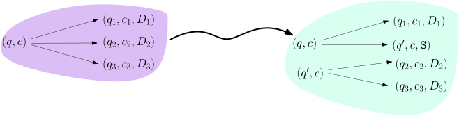
course1/public/img/turing-machines/nondeterminism/three-to-two.svgAuf der Menge der Konfigurationen schaut das dann noch./course1/wly/08/03-Turing-machine-variants.wly:637:9 intuitiver aus:./course1/wly/08/03-Turing-machine-variants.wly:638:9
 course1/public/img/turing-machines/nondeterminism/three-to-two-2.svg
course1/public/img/turing-machines/nondeterminism/three-to-two-2.svg
Sollte ein Paar
./course1/wly/08/03-Turing-machine-variants.wly:645:9$(q,c)$./course1/wly/08/03-Turing-machine-variants.wly:645:25
weniger als zwei./course1/wly/08/03-Turing-machine-variants.wly:645:32
Folgemöglichkeiten geben, so erfinden wir einfach neue, die./course1/wly/08/03-Turing-machine-variants.wly:646:9
jedoch direkt
./course1/wly/08/03-Turing-machine-variants.wly:647:9nach./course1/wly/08/03-Turing-machine-variants.wly:647:9reject./course1/wly/08/03-Turing-machine-variants.wly:647:28
führen. Es sollte klar sein,./course1/wly/08/03-Turing-machine-variants.wly:647:35
dass diese Änderungen rein kosmetisch sind und nichts an./course1/wly/08/03-Turing-machine-variants.wly:648:9
der Funktionsweise von
./course1/wly/08/03-Turing-machine-variants.wly:649:9$M$./course1/wly/08/03-Turing-machine-variants.wly:649:32
ändern. Nun bauen wir
./course1/wly/08/03-Turing-machine-variants.wly:649:35$M$./course1/wly/08/03-Turing-machine-variants.wly:649:58
um./course1/wly/08/03-Turing-machine-variants.wly:649:61
und geben ihr ein zweites Band. Auf diesem Band soll ein./course1/wly/08/03-Turing-machine-variants.wly:650:9
Wort in
./course1/wly/08/03-Turing-machine-variants.wly:651:9$\{0,1\}^*$./course1/wly/08/03-Turing-machine-variants.wly:651:17
stehen. Wir machen
./course1/wly/08/03-Turing-machine-variants.wly:651:28$M$./course1/wly/08/03-Turing-machine-variants.wly:651:48
deterministisch./course1/wly/08/03-Turing-machine-variants.wly:651:51
mit der folgenden Regel: wenn Du im Zustand
./course1/wly/08/03-Turing-machine-variants.wly:652:9$q$./course1/wly/08/03-Turing-machine-variants.wly:652:53
bist und./course1/wly/08/03-Turing-machine-variants.wly:652:56
auf dem ersten Band ein
./course1/wly/08/03-Turing-machine-variants.wly:653:9$c$./course1/wly/08/03-Turing-machine-variants.wly:653:33
hast und auf dem zweiten Band./course1/wly/08/03-Turing-machine-variants.wly:653:36
eine
./course1/wly/08/03-Turing-machine-variants.wly:654:9$0$./course1/wly/08/03-Turing-machine-variants.wly:654:14
liest, nimm den oberen Pfeil, der von
./course1/wly/08/03-Turing-machine-variants.wly:654:17$q,c$./course1/wly/08/03-Turing-machine-variants.wly:654:56
./course1/wly/08/03-Turing-machine-variants.wly:654:61
ausgeht; wenn Du eine
./course1/wly/08/03-Turing-machine-variants.wly:655:9$1$./course1/wly/08/03-Turing-machine-variants.wly:655:31
liest, nimm den unteren Pfeil../course1/wly/08/03-Turing-machine-variants.wly:655:34
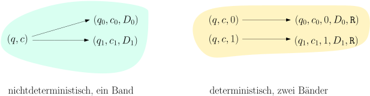
course1/public/img/turing-machines/nondeterminism/two-to-det.svgFalls wir auf dem zweiten Band einem anderen Zeichen./course1/wly/08/03-Turing-machine-variants.wly:662:9 begegnen ( ./course1/wly/08/03-Turing-machine-variants.wly:663:9$\square$./course1/wly/08/03-Turing-machine-variants.wly:663:20 oder sonst etwas, das weder 0 noch 1./course1/wly/08/03-Turing-machine-variants.wly:663:29 ist), dann lehnen wir sofort ab. Wir haben nun eine./course1/wly/08/03-Turing-machine-variants.wly:664:9 deterministische Turingmaschine ./course1/wly/08/03-Turing-machine-variants.wly:665:9$M''$./course1/wly/08/03-Turing-machine-variants.wly:665:41,./course1/wly/08/03-Turing-machine-variants.wly:665:46 die jedoch nicht./course1/wly/08/03-Turing-machine-variants.wly:665:46 das gleiche tut wie ./course1/wly/08/03-Turing-machine-variants.wly:666:9$M$./course1/wly/08/03-Turing-machine-variants.wly:666:29 . Aber: wenn ./course1/wly/08/03-Turing-machine-variants.wly:666:32$x \in L(M)$./course1/wly/08/03-Turing-machine-variants.wly:666:46,./course1/wly/08/03-Turing-machine-variants.wly:666:58 dann./course1/wly/08/03-Turing-machine-variants.wly:666:58 gibt es ein Wort ./course1/wly/08/03-Turing-machine-variants.wly:667:9$z \in \{0,1\}^*$./course1/wly/08/03-Turing-machine-variants.wly:667:26,./course1/wly/08/03-Turing-machine-variants.wly:667:43 das wir auf das zweite./course1/wly/08/03-Turing-machine-variants.wly:667:43 Band schreiben ./course1/wly/08/03-Turing-machine-variants.wly:668:9könnten./course1/wly/08/03-Turing-machine-variants.wly:668:25,./course1/wly/08/03-Turing-machine-variants.wly:668:33 so dass ./course1/wly/08/03-Turing-machine-variants.wly:668:33$M''$./course1/wly/08/03-Turing-machine-variants.wly:668:43 das Eingabewort ./course1/wly/08/03-Turing-machine-variants.wly:668:48$x$./course1/wly/08/03-Turing-machine-variants.wly:668:65 ./course1/wly/08/03-Turing-machine-variants.wly:668:68 akzeptiert. Im Gegenzug: wenn ./course1/wly/08/03-Turing-machine-variants.wly:669:9$x \not \in L(M)$./course1/wly/08/03-Turing-machine-variants.wly:669:39,./course1/wly/08/03-Turing-machine-variants.wly:669:56 dann./course1/wly/08/03-Turing-machine-variants.wly:669:56 können wir auf das zweite Band schreiben, was wir wollen,./course1/wly/08/03-Turing-machine-variants.wly:670:9 ./course1/wly/08/03-Turing-machine-variants.wly:671:9$M''$./course1/wly/08/03-Turing-machine-variants.wly:671:9 wird immer ablehnen../course1/wly/08/03-Turing-machine-variants.wly:671:14
course1/public/img/turing-machines/det-simulates-nondet/01.svg
 course1/public/img/turing-machines/det-simulates-nondet/02.svg
course1/public/img/turing-machines/det-simulates-nondet/02.svg
 course1/public/img/turing-machines/det-simulates-nondet/03.svg
course1/public/img/turing-machines/det-simulates-nondet/03.svg
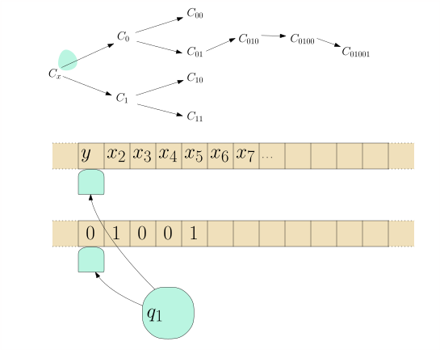
course1/public/img/turing-machines/det-simulates-nondet/04.svg course1/public/img/turing-machines/det-simulates-nondet/05.svg
course1/public/img/turing-machines/det-simulates-nondet/05.svg
 course1/public/img/turing-machines/det-simulates-nondet/06.svg
course1/public/img/turing-machines/det-simulates-nondet/06.svg
 course1/public/img/turing-machines/det-simulates-nondet/07.svg
course1/public/img/turing-machines/det-simulates-nondet/07.svg
 course1/public/img/turing-machines/det-simulates-nondet/08.svg
course1/public/img/turing-machines/det-simulates-nondet/08.svg
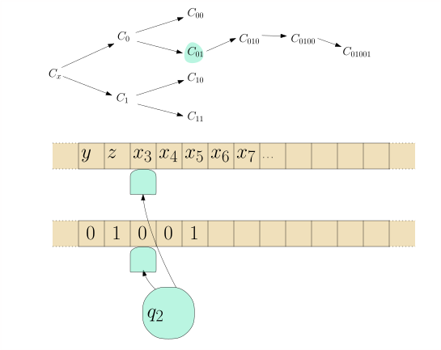
course1/public/img/turing-machines/det-simulates-nondet/09.svg course1/public/img/turing-machines/det-simulates-nondet/10.svg
course1/public/img/turing-machines/det-simulates-nondet/10.svg
 course1/public/img/turing-machines/det-simulates-nondet/11.svg
course1/public/img/turing-machines/det-simulates-nondet/11.svg
 course1/public/img/turing-machines/det-simulates-nondet/12.svg
course1/public/img/turing-machines/det-simulates-nondet/12.svg
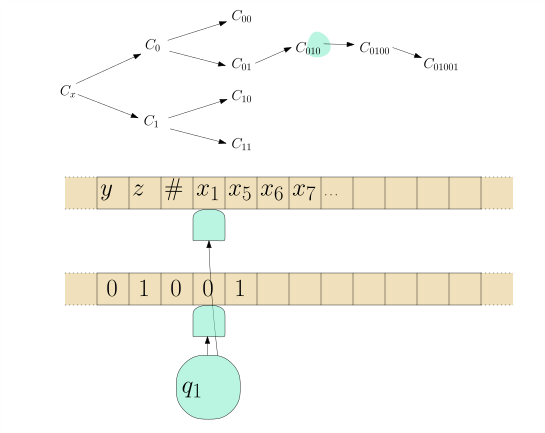
course1/public/img/turing-machines/det-simulates-nondet/13.svg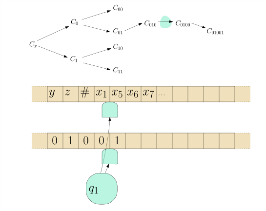
course1/public/img/turing-machines/det-simulates-nondet/14.svgNun bauen wir schlussendlich eine Maschine ./course1/wly/08/03-Turing-machine-variants.wly:690:9$M'$./course1/wly/08/03-Turing-machine-variants.wly:690:52,./course1/wly/08/03-Turing-machine-variants.wly:690:56 die in./course1/wly/08/03-Turing-machine-variants.wly:690:56 einer Endlosschleife alle möglichen ./course1/wly/08/03-Turing-machine-variants.wly:691:9$z \in \{0,1\}^*$./course1/wly/08/03-Turing-machine-variants.wly:691:45 ./course1/wly/08/03-Turing-machine-variants.wly:691:62 aufzählt, auf das zweite Band schreibt, und ./course1/wly/08/03-Turing-machine-variants.wly:692:9$M''$./course1/wly/08/03-Turing-machine-variants.wly:692:53 ./course1/wly/08/03-Turing-machine-variants.wly:692:58 neustartet. Geht das? Wir können zum Beispiel./course1/wly/08/03-Turing-machine-variants.wly:693:9 ./course1/wly/08/03-Turing-machine-variants.wly:694:9$i = 1,2,3,4,\dots$./course1/wly/08/03-Turing-machine-variants.wly:694:9 hochzählen, binär schreiben und die./course1/wly/08/03-Turing-machine-variants.wly:694:28 führende 1 löschen. Überzeugen Sie sich, dass in dieser./course1/wly/08/03-Turing-machine-variants.wly:695:9 Reihe wirklich alle ./course1/wly/08/03-Turing-machine-variants.wly:696:9$z \in \{0,1\}^*$./course1/wly/08/03-Turing-machine-variants.wly:696:29 vorkommen../course1/wly/08/03-Turing-machine-variants.wly:696:46A\(\square\)